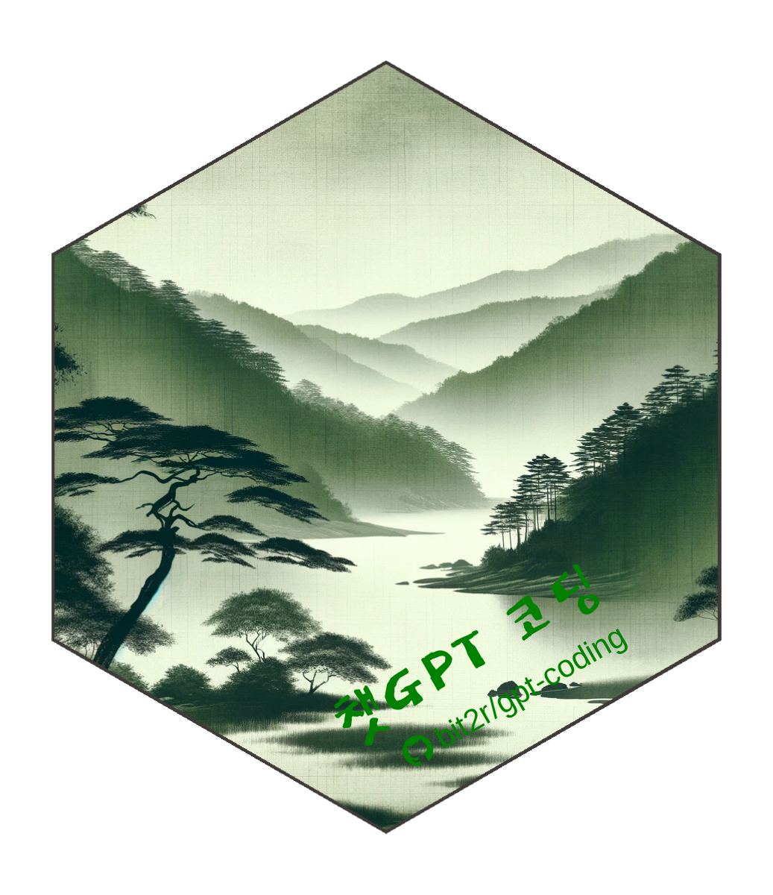

챗GPT 코딩(개정판)

프로그래밍 기초부터 소프트웨어 아키텍처, 그리고 인공지능까지
📘 개요
“챗GPT 코딩 개정판”은 프로그래밍 완전 초보자가 AI 시대의 전문 개발자로 성장하는 전 과정을 안내하는 종합 가이드입니다.
2024년 초판 출간 이후 많은 독자분들의 요청에 따라, 프로그래밍 기초(1-4부)에 더해 프로그래밍 패러다임(5부), 소프트웨어 설계와 아키텍처(6부), 기계학습 패러다임(7부)을 새롭게 추가했습니다.
개정판의 특징
- ✅ 체계적 학습 경로: 첫 변수 선언부터 대규모 AI 시스템 구축까지
- ✅ AI 협업 실전: Claude, ChatGPT, Copilot 등 AI 도구 활용법
- ✅ 실무 중심: Git/GitHub 협업, 디자인 패턴, 아키텍처 설계
- ✅ 최신 기술: LLM, 벡터 DB, 임베딩, 그래프 자료구조
📚 책의 구성 (7부)
1부: 전통 프로그래밍
프로그래밍의 기초 - 변수, 조건문, 반복문, 함수
2부: 자료구조
문자열부터 데이터프레임, JSON, 텐서, 임베딩, 그래프까지
3부: 버전제어와 협업
Git/GitHub를 활용한 팀 협업과 워크플로우
4부: 분야별 코딩
정규표현식, 네트워크, 웹, 데이터베이스, 자동화, Make
5부: 프로그래밍 패러다임 ⭐ 신규
명령형, 객체지향, 함수형, 선언형, 반응형 프로그래밍
6부: 소프트웨어 설계와 아키텍처 ⭐ 신규
코드 재사용, 기술 스택, 아키텍처, 디자인 패턴
7부: 기계학습 패러다임 ⭐ 신규
ML 아키텍처, 워크플로우, LLM 활용
🌐 프로젝트 정보
웹사이트
📖 온라인 버전: https://r2bit.com/gpt-coding/
소스코드
💻 GitHub 저장소: https://github.com/bit2r/gpt-coding/
제작 기술
전자책은 Quarto Book을 활용하여 제작되었습니다. PDF 파일은 한글 글꼴 및 한글 책 특성을 반영하기 위해 공익법인 한국 R 사용자회에서 제작한 bitPublish 템플릿을 사용했습니다.
🛠️ 로컬 개발 환경
필수 요구사항
- Quarto 1.4 이상
- Python 3.10 이상 (선택사항)
의존성 설치
Python 패키지 (선택사항):
pip install -r requirements.txt책 렌더링
전체 책 렌더링:
quarto render미리보기 (포트 7771):
quarto preview특정 챕터만:
quarto render index.qmd출력 파일은 docs/ 디렉토리에 생성됩니다.
📦 출판 정보
초판 (2024년 3월)
📘 교보 POD 종이책: https://bit.ly/4a8v1JS 📗 교보 전자책: https://bit.ly/4auasHU
개정판 (2026년)
🚀 출간 준비 중
🤝 기여 및 피드백
이슈나 개선 제안은 GitHub Issues를 통해 제출해주세요.
📄 라이선스
이 프로젝트는 공익법인 한국 R 사용자회가 관리합니다.
👨💻 저자
이광춘 국가인공지능전략위원회 자문위원
⭐ 이 프로젝트가 도움이 되셨다면 GitHub에 Star를 눌러주세요!